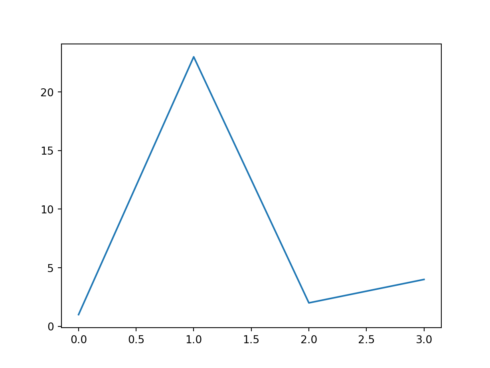

R
1 + 1[1] 2This is for how to use Quarto to write notes
It is a good start to learn how to use quarto document. In general, the usage of quarto is very similar to markdown. For more details, see https://quarto.org/docs/guide/.
| Syntax | Output | Syntax | Output |
|---|---|---|---|
*italics* |
italics | **bold** |
bold |
***bold italics*** |
bold italics | ~~strikethrough~~ |
|
superscript^2^ |
superscript2 | subscript_2 |
subscript_2 |
<https://quarto.org> |
https://quarto.org | [Quarto](https://quarto.org) |
Quarto |
| Markdown Syntax | Output |
|---|---|
|
|
|
|
|
|
continues after
|
|
|
|
|
To present the code without running it, you can either add ” ```` markdown ” before the code and ” \``` ” after the code. Or you can use ” ```{{markdown}} ”
To install python packages under a specific version:
Need to load reticulate package before running python code:
In order for a table to be cross-referenceable, its label must start with the tbl- prefix.
from IPython.display import Markdown
from tabulate import tabulate
table = [["Sun",696000,1989100000],
["Earth",6371,5973.6],
["Moon",1737,73.5],
["Mars",3390,641.85]]
Markdown(tabulate(
table,
headers=["Planet","R (km)", "mass (x 10^29 kg)"]
))| Planet | R (km) | mass (x 10^29 kg) |
|---|---|---|
| Sun | 696000 | 1.9891e+09 |
| Earth | 6371 | 5973.6 |
| Moon | 1737 | 73.5 |
| Mars | 3390 | 641.85 |
Refer this table as Table 1
In order for a figure to be cross-referenceable, its label must start with the fig- prefix.
Suppose we have an equation
\[ E = mc^2 \tag{1}\]
After the second $$ add {#eq-1} as label. To refer this equation, use @eq-1 (Equation 1).
To reference a section, add a #sec- identifier to any heading. For example
To create a reference-able code block, add a #lst- identifier along with a lst-cap attribute. For example:
Refer the code as Listing 1
Then we query the customers database (Listing 1).
```{markdown}
| Default | Left | Right | Center |
|---------|:-----|------:|:------:|
| 12 | 12 | 12 | 12 |
| 123 | 123 | 123 | 123 |
| 1 | 1 | 1 | 1 |
: Demonstration of pipe table syntax
```| Default | Left | Right | Center |
|---|---|---|---|
| 12 | 12 | 12 | 12 |
| 123 | 123 | 123 | 123 |
| 1 | 1 | 1 | 1 |
```{quarto}
::: {#tbl-panel layout-ncol="2"}
| Col1 | Col2 | Col3 |
|------|------|------|
| A | B | C |
| E | F | G |
| A | G | G |
: First Table {#tbl-first}
| Col1 | Col2 | Col3 |
|------|------|------|
| A | B | C |
| E | F | G |
| A | G | G |
: Second Table {#tbl-second}
Main Caption
:::
See @tbl-panel for details, especially @tbl-second.
```| Col1 | Col2 | Col3 |
|---|---|---|
| A | B | C |
| E | F | G |
| A | G | G |
| Col1 | Col2 | Col3 |
|---|---|---|
| A | B | C |
| E | F | G |
| A | G | G |
See Table 2 for details, especially Table 2 (b).
Python
| Astronomical object | R (km) | mass (kg) |
|---|---|---|
| Sun | 696,000 | 1.989e+30 |
| Earth | 6,371 | 5.972e+24 |
| Moon | 1,737 | 7.34e+22 |
| Mars | 3,390 | 6.39e+23 |
Grid tables are a more advanced type of markdown tables that allow arbitrary block elements (multiple paragraphs, code blocks, lists, etc.). For example:
+-----------+-----------+--------------------+
| Fruit | Price | Advantages |
+===========+===========+====================+
| Bananas | $1.34 | - built-in wrapper |
| | | - bright color |
+-----------+-----------+--------------------+
| Oranges | $2.10 | - cures scurvy |
| | | - tasty |
+-----------+-----------+--------------------+
: Sample grid table.Which looks like this when rendered to HTML:
| Fruit | Price | Advantages |
|---|---|---|
| Bananas | $1.34 |
|
| Oranges | $2.10 |
|
The row of =s separates the header from the table body, and can be omitted for a headerless table. Cells that span multiple columns or rows are not supported.
Alignments can be specified as with pipe tables, by putting colons at the boundaries of the separator line after the header:
+---------+--------+------------------+
| Right | Left | Centered |
+========:+:=======+:================:+
| Bananas | $1.34 | built-in wrapper |
+---------+--------+------------------+Which looks like this when rendered to HTML:
| Right | Left | Centered |
|---|---|---|
| Bananas | $1.34 | built-in wrapper |
For headerless tables, the colons go on the top line instead:
+----------:+:----------+:--------:+
| Right | Left | Centered |
+-----------+-----------+----------+Which looks like this when rendered to HTML:
| Right | Left | Centered |
To insert figure, you can use
Examples to change width:
{width=300}
{width=80%}
{width=4in}To link a figure online, we can use
Additional functions:
| Code | Functions | Example |
|---|---|---|
fig-align |
figure alignment | {fig-align="left"} |
fig-alt |
alternative text | {fig-alt="A drawing of an elephant."} |
#fig-xxx |
cross references (use@ for reference) |
{#fig-elephant} |

For a demonstration of a line plot, see Figure 1.
```{mermaid}
flowchart LR
A[Hard edge] --> B(Round edge)
B --> C{Decision}
C --> D[Result one]
C --> E[Result two]
```flowchart LR
A[Hard edge] --> B(Round edge)
B --> C{Decision}
C --> D[Result one]
C --> E[Result two]
You can add classes, attributes, and other identifiers to regions of content using Divs and Spans. For example, here we add the “border” class to a region of content using a div (:::):
This content can be styled with a border
Once rendered to HTML, Quarto will translate the markdown into:
There are five different types of callouts available.
note: callout-notewarning: callout-warningimportant: callout-importanttip: callout-tipcaution: callout-cautionThe color and icon will be different depending upon the type that you select. Here are what the various types look like in HTML output:
Note that there are five types of callouts, including: note, tip, warning, caution, and important.
Callouts provide a simple way to attract attention, for example, to this warning.
Danger, callouts will really improve your writing.
This is an example of a callout with a title.
This is an example of a ‘collapsed’ caution callout that can be expanded by the user. You can use collapse="true" to collapse it by default or collapse="false" to make a collapsible callout that is expanded by default. Code for this section: {.callout-caution collapse="true"}